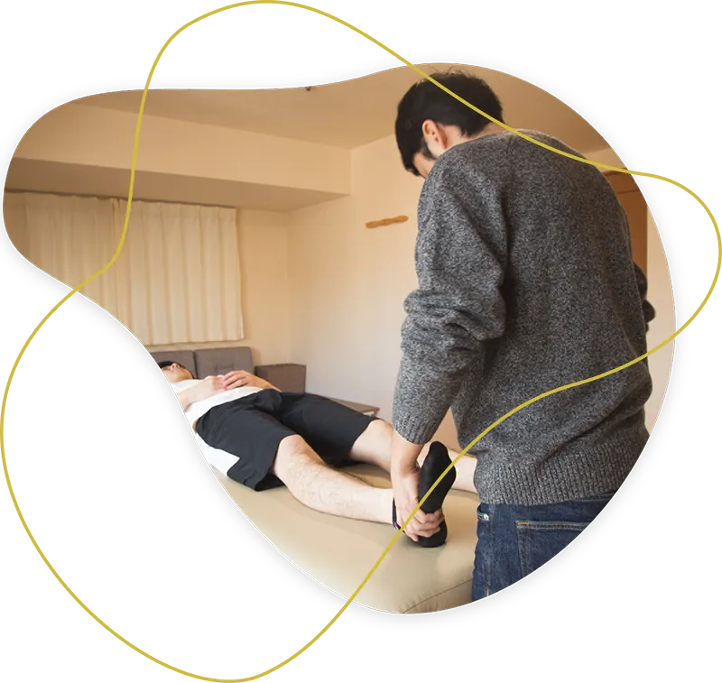
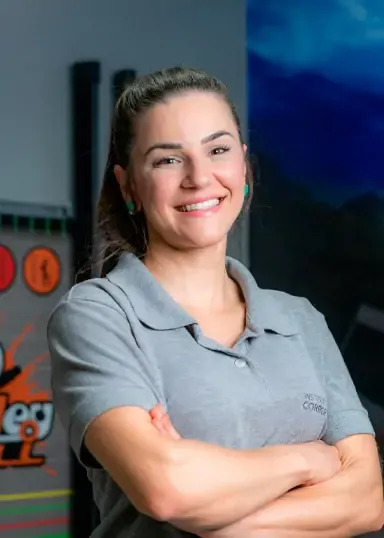
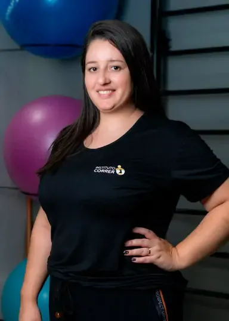

Fisioterapia
Avaliação detalhada e conduta individualizada para resolver a causa da dor, não apenas o sintoma.
Saiba maisFisioterapia, quiropraxia e pilates com avaliação detalhada e conduta individualizada. A gente trata a causa, não só o sintoma, para que você volte ao movimento com segurança e sem recaída.

Muita gente passa anos alternando entre alívio momentâneo e o retorno da mesma dor. Isso acontece quando o tratamento persegue o sintoma e ignora o que o produziu.
Personalização no atendimento é saber exatamente o que pede cada dor e quais ferramentas podem ser utilizadas. Por isso começamos sempre pela avaliação, e só depois definimos a conduta.
Não escolhemos a técnica antes de entender o problema. A avaliação define qual combinação de recursos resolve o seu caso no menor tempo possível.
Avaliação detalhada e conduta individualizada para resolver a causa da dor, não apenas o sintoma.
Saiba maisAjustes precisos que devolvem mobilidade às articulações e reorganizam a mecânica da coluna.
Saiba maisEstúdio com aparelhos e acessórios, com séries desenhadas a partir da sua avaliação de movimento.
Saiba maisTécnica que desativa pontos-gatilho e libera a fáscia muscular, reduzindo tensão e dor.
Saiba maisMobilizações, manipulações e técnicas de tecidos moles aplicadas com raciocínio clínico.
Saiba maisO que a gente quer é fazer diferença no seu mover, oferecendo um serviço que vai além da fisioterapia convencional.
A dor é um sinal de proteção. Aprender a ler esse sinal e a administrar os próprios limites é o que resolve o alerta na origem.
Não existe só um jeito de ser saudável. Nada de protocolo rígido: cada paciente é um sistema único e complexo.
Embasamento científico como ponto de partida, com flexibilidade para adaptar avaliação e conduta ao que o seu corpo responde.
Tecnologia avançada a serviço do protocolo, com uma avaliação inicial que é sempre o que determina o resultado.
“A gente te ajuda a manter a saúde dos seus movimentos e a respeitar o seu corpo pra você não se machucar.”
Instituto CorrerUm caminho claro, com objetivos definidos em cada etapa. Você sempre sabe onde está e o que vem a seguir.
Você fala com a gente pelo WhatsApp ou telefone, conta rapidamente o que está sentindo e escolhe o melhor horário. Agenda com disponibilidade rápida.
Conversa sobre sua história, exame físico e funcional, testes de movimento e, quando indicado, recursos tecnológicos. É aqui que o diagnóstico funcional aparece.
Definimos objetivos, quais técnicas serão usadas, com que frequência e em quanto tempo esperamos cada marco. Você entende e concorda com o plano antes de começar.
Sessões conduzidas por especialistas, com reavaliação periódica. Se o corpo responde diferente do esperado, o plano muda, e não você que se adapta ao protocolo.
Recuperação completa, sem recidivas. Você sai com orientação de manutenção e, se quiser, segue no pilates para não voltar ao ponto de partida.
Fisioterapeutas, quiropraxistas e uma estrutura de atendimento pensada para que você se sinta acolhido do primeiro contato à alta.


Cheguei com uma dor lombar que já durava mais de um ano e achando que ia ter que conviver com aquilo. A diferença aqui foi a avaliação: pela primeira vez alguém me explicou o porquê da dor. Voltei a correr em três meses.
Fiz quiropraxia por causa de dores de cabeça constantes que nenhum remédio resolvia. O tratamento foi tranquilo e o acompanhamento, atencioso. Hoje as crises são raras e eu sei o que fazer quando aparecem.
Entrei no pilates depois da reabilitação do joelho e nunca mais parei. As séries são feitas para mim, não para a turma. É o único lugar onde eu sinto que estão prestando atenção no meu movimento.
Não encontrou sua dúvida? Fale com a gente pelo WhatsApp. Respondemos em horário comercial.
Perguntar no WhatsAppRua Frederico Busch Júnior, 101, Ed. Oswaldo Cruz
Blumenau/SC, CEP 89020-400
Seg. a sex., das 7h às 12h e das 13h às 20h
Agende uma avaliação completa e descubra, com clareza, o que está acontecendo com o seu corpo e qual é o caminho mais curto para você voltar a se mover sem medo.
Seg. a sex., das 7h às 12h e das 13h às 20h · Rua Frederico Busch Júnior, 101, Ed. Oswaldo Cruz